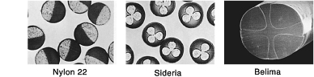
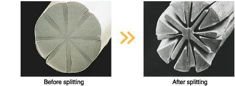
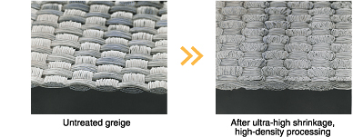

Belima X was created by utilizing the world-class conjugate technology of KB SEIREN. Its unique split-type fiber structure paves the way for an excellent feel, high performance, and a possibility for further evolution.
Features
KB SEIREN's Conjugate Technology that Yielded Belima X

Conjugate fiber technology combines two polymers of different nature in various ways by composite spinning.Originating with "Nylon 22" (1965), a combination of two types of nylon polymers, and following "Sideria" (1969) and "Belima" (1973) of polyester and nylon combinations, the special conjugate fiber "Belima X" was finally created in 1977.Split-Type Ultra-Fine Microfiber, with Each Filament as Fine as Only 0.1 decitex

The greatest characteristic of Belima X is its flower-shaped split fiber structure. The wedge-shaped parts around the periphery are polyester, while the star-shaped core is made of nylon. Belima X fabrics are made by chemically splitting this conjugate (composite) yarn after it is woven or knitted. After being split, each filament is only 0.1 decitex in diameter, so fine that only one pound (453 g) of these fibers is enough to encircle the globe. This remarkable fineness is the key to the creation of various high-performance, fashionable materials.Ultra-High Shrinkage, High-Density Processing to Make Fabrics Function on Their Own

Belima X is easily woven or knitted to form fabrics because the yarn before splitting is as thick as 2 decitex. Only when the fabric undergoes the yarn splitting process does it shrink into a high-density, high-performance material that is both breathable and water resistant. The advantages of this ultra-high shrinkage, high-density processing are available only in the case of split-type microfibers.Applications
Fabrics made of Belima X possess a supple feel, superb breathability and water repellency, and excellent dyeing properties. These characteristics have led to the adoption of Belima X fabrics in a variety of applications ranging from luxury apparel to sportswear, upholstery, household goods and even high-tech industrial materials.
| Copyright(C) 2007 KB SEIREN, LTD. All Rights Reserved. | Site Map | Contact Us | Japanese | chinese |